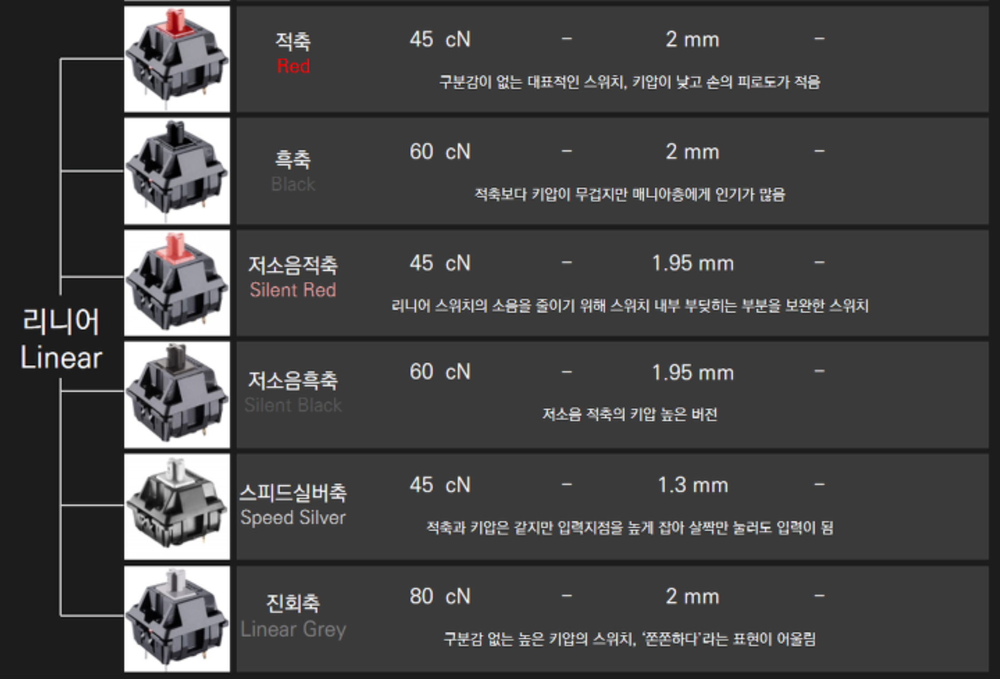
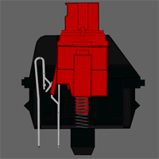
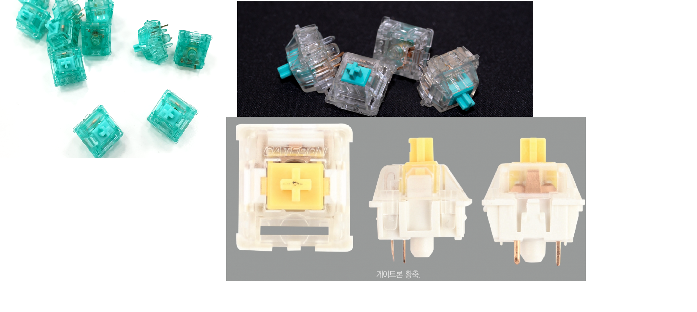
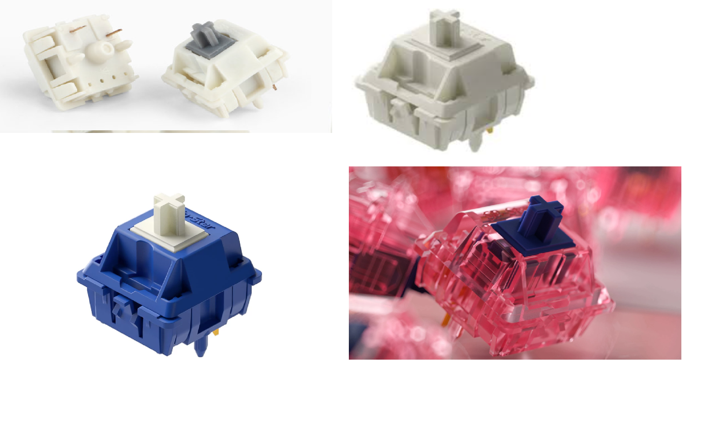

특징
 출처) https://rebyte.kr/71-타건할 때 아무런 걸림이나 구분감이 없는 스위치.
-독일 Cherry 사의 체리 스위치로부터 시작되었다. 체리 스위치로부터 파생된 다양한 리니어 스위치가 존재하며, 현재 수십 종류의 리니어 스위치가 판매되고 있다.
-아무런 걸림이나 구분감 없어 하우징 + 보강판 + 스위치 + 키캡 등 조립 방식에 큰 영향을 받는다. 특히 PBT, ABS 키캡에 따른 차이가 가장 크게 나타나고, 보강판과 결합 방식에도 큰 영향을 받는다.
-키보드의 입력을 컴퓨터에 전달하는 접점부의 소리, 느낌과 입력 시 스위치 내 슬라이더 마찰이 타건감에 매우 큰 영향을 준다.
-스위치 편차와 타건감, 타건음을 위해서 반응성이 적은 윤활유로 윤활 작업을 진행하기도 한다. -- 윤활 Click
체리 리니어
 같은 스위치라도 조합에 따라 다르다.-체리 리니어는 적축 / 흑축 / 저소음 적축 / 저소음 흑축 등으로 구분
-체리 리니어 축은 생산 세대 별로 구분된다.
-생산 설비가 노후화됨에 따라 플라스틱 사출에 문제가 발생하였고, 그때마다 설비를 재정비하였다. 상태가 좋은 구 체리흑축 같은 경우 수십 만 원에 거래되기도 한다.
#세대 구분: 구 체리축 / 신 체리축 / 초기신신흑 /신신 체리축 / 삼신 체리축
-대중적인 체리 리니어 축은 체리 흑축이다. 무거운 작동 압력을 가지고 있지만, 스프링만 교체하여 사용한다.
-모든 리니어 축의 근원이며, 가장 호불호가 적은 스위치이다.
-모든 리니어 제품을 통틀어 가장 접점부 소음이 적지만, 서걱임이 굉장히 심하여 윤활을 필요로 한다.
-중저가형 키보드부터 고가형 키보드, 나아가 커스텀 키보드에도 애용되고 있다.
-RGB 모델은 일반적인 체리축과는 다른 재질로 되어 있어 키감이 상당히 다르다. 빈 소리와 좋지 못한 접점부 때문에 Non-RGB, 검정 하우징을 선호한다.
게이트론 리니어
 게이트론 황축과 틸리오스-게이트론 황축 / 백축 / 틸리오스 등이 있다.
-서걱임(내부 마찰)이 거의 없다시피 하지만 접점부 소음이 상당하다.
-체리 축과는 다른 재질로 하우징을 제작하여 타건음과 타건감이 체리 축과는 상당히 다르다.
-실제로 타건해보면 같은 하우징, 키캡이라도 체리 축과 게이트론 축은 매우 다르다.
-체리보다 접점부 내구도도 많이 떨어져서 호불호가 정말 많이 갈리는 스위치.
-체리 흑축은 1알 당 450원인 반면에, 게이트론 특주 축인 틸리오스는 1알 당 1천 원에 거래되고 있다.
SP-star
-레오폴드와 zFrontier 사가 협업하여 만든 스위치.
-극성회축 / 극성백축 / 유성백축 등의 리니어 스위치가 있다.
-전체적으로 경쾌하고 가벼운 타건감과 타건음을 제공한다.
-다양한 재질의 스위치를 생산하고, 값도 저렴하다. 접점부도 게이트론보다 훨씬 양호하며 서걱임도 거의 없는 편이다.
-기계식 키보드를 입문한 사람이면 대부분 한 번씩은 꼭 써보는 스위치이다.
JWK, Kailh, 오테뮤 등
-JWK : 요청서를 받아 주문 제작해주는 스위치 제작 업체
대표적으로 H1 / T1 / 에버글라이드 등이 있다.
-Kailh : 키보드 스위치뿐만 아니라 마우스 등의 전자제품도 제조
박스 축과 광축을 중심으로 중저가 제품 시장을 장악했다. 다만 스템과 내구성 이슈가 있다. 점유율이 오르자 가격이 많이 올랐다.
-오테뮤 : 카일과 마찬가지로 중저가 시장을 타겟으로, 다양한 체리 카피축을 출시하였다. 최근 카일 사에 점유율을 많이 뺏겼다. 그래도 여전히 피시방 키보드, 저가 제품 군에서는 선전하고 있다.